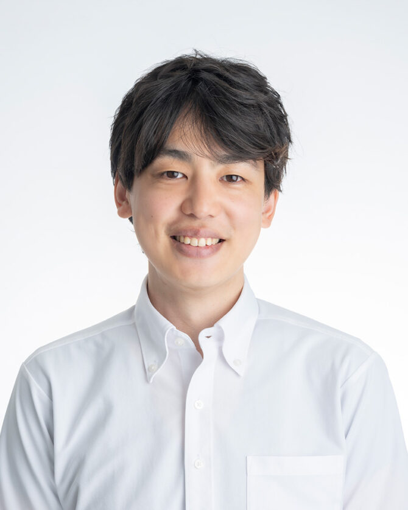

NISHIDA Kazuki, MD, PhD — Biostatistician
MD, PhD

I am a biostatistician specializing in pharmacovigilance. My methodological research develops machine-learning approaches to signal detection on the WHO global safety database (VigiBase), alongside the design and analysis of clinical trials and observational studies. Through collaborations I support statistical analysis across a wide range of clinical fields — critical care, neurosurgery, vascular surgery, pediatrics, and oncology.
Selected lead-author papers. See all 112 publications (incl. co-authorship) on researchmap.
Competitive research funding (as principal or co-investigator).
Society: The Biometric Society of Japan